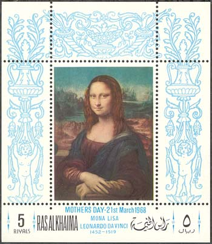

|
Created: 05/11/02. Revised:
05/11/02. Copyright © 2002 by Victor Manta, Switzerland. All rights reserved in all countries. |
|
||
To all mothers stamp collectors in the world The earliest Mother's Day celebrations can be traced back to the spring celebrations of ancient Greece in honor of Rhea, the Mother of the Gods. During the 1600's, England celebrated a day called "Mothering Sunday". Celebrated on the 4th Sunday of Lent (the 40 day period leading up to Easter*), "Mothering Sunday" honored the mothers of England. During this time many of the England's poor worked as servants for the wealthy. As most jobs were located far from their homes, the servants would live at the houses of their employers. On Mothering Sunday the servants would have the day off and were encouraged to return home and spend the day with their mothers. A special cake, called the mothering cake, was often brought along to provide a festive touch.
As Christianity spread throughout Europe the celebration changed to honor the "Mother Church" - the spiritual power that gave them life and protected them from harm. Over time the church festival blended with the Mothering Sunday celebration . People began honoring their mothers as well as the church.
In the United States Mother's Day was first suggested in 1872 by Julia Ward Howe (who wrote the words to the Battle hymn of the Republic) as a day dedicated to peace. Ms. Howe would hold organized Mother's Day meetings in Boston, Mass ever year.
In 1907 Ana Jarvis, from Philadelphia, began a campaign to establish a national Mother's Day. Ms. Jarvis persuaded her mother's church in Grafton, West Virginia to celebrate Mother's Day on the second anniversary of her mother's death, the 2nd Sunday of May. By the next year Mother's Day was also celebrated in Philadelphia.
Ms. Jarvis and her supporters began to write to ministers, businessman, and politicians in their quest to establish a national Mother's Day. It was successful as by 1911 Mother's Day was celebrated in almost every state. President Woodrow Wilson, in 1914, made the official announcement proclaiming Mother's Day as a national holiday that was to be held each year on the 2nd Sunday of May.  While many countries of the world celebrate their own Mother's Day at different times throughout the year, there are some countries such as Denmark, Finland, Italy, Turkey, Australia, Belgium and Switzerland which also celebrate Mother's Day on the second Sunday of May. After: http://www.holidays.net/mother/story.htm Some won't like the stamps shown above, because they were issued by a country with a quite bad philatelic reputation. Nevertheless this set, issued on March 21, 1968, and commemorating Mother's Day, is a beautiful one, that's why I decided to display it.
Tip: To get some supplemental information about the works of art
displayed, please point to them with the mouse index. |
Other pages on the Art on Stamps site that are dedicated to women:
| Flowers | Beautiful women | Love | Nudes | Decembre |
|
|
|
Created: 05/11/02. Revised:
05/11/02. Copyright © 2002 by Victor Manta, Switzerland. All rights reserved in all countries. |
|
||